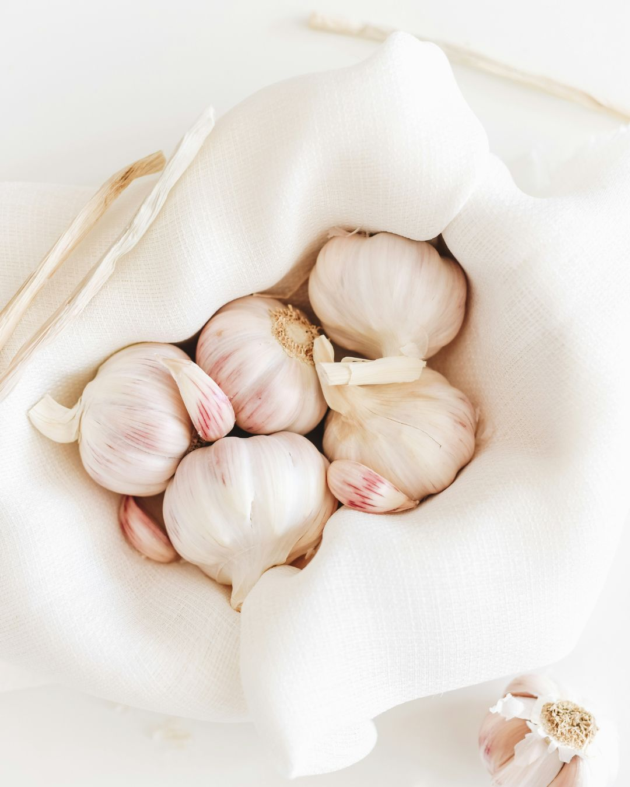

Available for ExportAllium sativum
Premium Garlic
Export-ready garlic with consistent bulb sizing, low moisture content, and full batch traceability — delivered with verified quality documentation.
- Low moisture for extended shelf life
- Consistent grade and sizing per batch
- QR traceable from farm to delivery